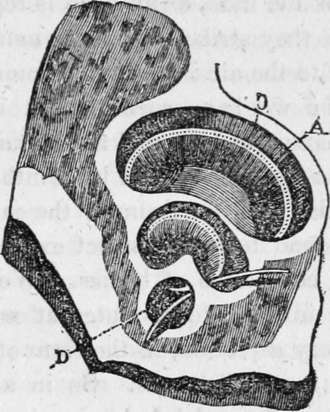

The Sense Of Hearing. Part 3
Description
This section is from the book "Human Physiology For The Use Of Elementary Schools", by Charles Alfred Lee. Also available from Amazon: Human Physiology, for the Use of Elementary Schools.
The Sense Of Hearing. Part 3
12. Now in distinguishing low sounds, the drum head is supposed to be put upon the stretch, chiefly by the aid of one little muscle, called tensor tympani, which is attached to the malleus, and the centre of the membrane, so that when it acts, it pulls the long handle of that bone, and draws the tympanum inwards. Thus being made tense, it is prepared for the reception of low sounds. When sounds are so acute as to be painful, and we wish to diminish their intensity, this muscle relaxes, and the tympanum becoming comparatively flaccid, a deadened muffled impression is transmitted to the brain, precisely as when we muffle a drum. This relaxation is also aided by a muscle expressly prepared for that purpose, called laxator tympani, which arises from the temporal bone and is inserted into the handle of the malleus, so as to pull it forwards.
13. We traced the progress of sound through the external ear, the auditory passage, and the chain of bones, to the stapes. Now, if the reader will look at plate II., he will see that the base of the stirrup bone is smooth and flat ; this is placed directly upon the passage into the labyrinth, called foramen ovale, as a seal is placed on an impression, or a valve upon a hole. The cavities we have described are filled with air, those now to be mentioned are filled with water. The labyrinth then, which has been called the audience chamber of the ear, consists of three parts, viz., the vestibule or lobby, which may be compared to the porch of a building; three semi circular canals shaped like three hoops, tied together at one point, and their opposite points widely separated; and lastly, the cochlea, which closely resembles a snail shell, consisting of two spiral canals, which wind round a central pillar twice and a half, and also separated by a spiral partition.
Fig. 9. Section of the Cochlea.
14. The stapes then rests upon the membrane which is placed across the opening into the labyrinth. When the tympanum, or drum head, is impressed by the vibrations of the air, the vibration is communicated to the little bones, and through them to the membrane of the labyrinth, which causes corresponding tremors in the fluid which fills its winding canals, and the spiral passages of the cochlea ; upon which the auditory nerve is spread out like a fine pulpy web, in the same manner as the retina is spread out upon the choroid coat of the eye, or the olfactory nerve upon the mucous membrane of the nose, and thus is sound conveyed by the nerve to the brain.
15. The object of these spiral passages returning into themselves is, doubtless, to furnish an extensive surface, within a small space, for the expansion of the auditory nerve, and also that the undulations of the fluid which fills them after passing from the oval fenestra along the winding passages, and up the spiral staircase of the cochlea, might come down to the round fenestra, whose elastic membrane would transmit the vibration in the opposite direction.- When the sounds, therefore, have done their office, in order that the hearing might not be rendered confused by a pro longed vibration of the fluid, as an echo is repeated between two mountains, as they strike the above named membrane, they are given off to the air in the tympanum, and there the vibrations end; for we have seen that it is probably the bones in the tympanum chiefly, and not the air, which transmits impressions to the fluids of the labyrinth, and that they receive their impulse from the drum of the ear.
16. Sound
Sound has no distinct existence, but is the result of certain conditions of bodies. We see how, by throwing a pebble into a lake of water at rest, the undulations spread in every direction, in the form of a circle, until the impulse is lost in the distance. So in air, frequent vibrations produce sound ; and hearing has been defined to be that function by which we obtain a knowledge of the vibratory motions of bodies. These motions produce waves or undulations in the air, which are propagated in every direction, as the circular waves are produced in the lake, by throwing in the pebble.
17. Air is the common vehicle of sound, though all elastic bodies are capable of conveying it. Water conveys sound better than air, and some solid bodies better than either. If two stones are struck together under water, a person whose head is under the surface may hear the sound at a great distance. A blow struck with a hammer by a workman in a diving bell, far below the surface of the water, is heard distinctly many fathoms above. So also if the ear be applied to the end of a loner stick of timber a slight scratch made at the other extremity will be distinctly heard. The report of a cannon is heard to a much greater distance over the frozen surface of snow ; and, under such circumstances, firing has been heard from one to two hundred miles. Savages are acquainted with this fact, for they apply their ears to the ground to hear the approaching footsteps of their enemy or their prey. An easy way to tell whether a tea kettle boils, is to touch it with a stick, and place the other end to the ear. On this principle, I suppose, watchmen strike the curb stone with their clubs, as the sound is communicated much farther than it was formerly by means of their rattle. So also a musical box, when held in the hand is scarcely heard, but when placed on a bureau or sounding board, it "dis courseth most eloquent music." The stethoscope now used by physicians to assist in determining the nature of many diseases is derived from a knowledge of this principle. It is merely a cylinder of wood^ about an inch in diameter, one end of which is placed on the surface of the body over the diseased part, and the other applied to the ear; sound is thus carried along the tube, and most important aid is derived to the skilful physician, in ascertaining the nature and seat of all diseases of the heart and lungs.
Continue to:
Tags
humans, anatomy, skeleton, bones, physiology, organs, nerves, brain